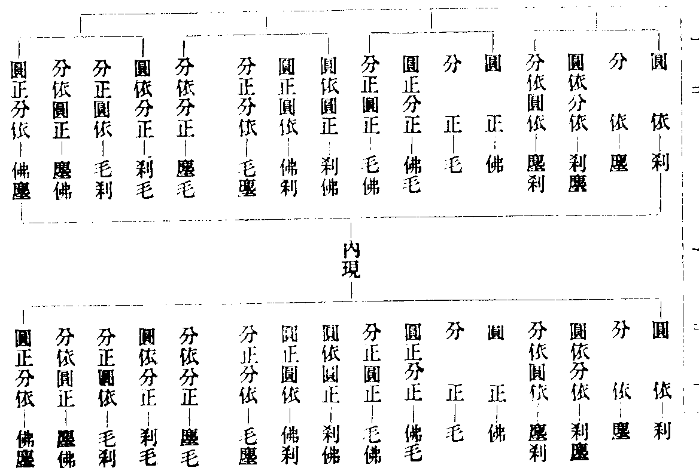

華嚴懸談會玄記卷第十
疏諸會佛加皆言願力者即一三四五六此五會入定有加二七不入定故無加第八入定無加而有發起第九會佛自入定故無有加唯五會有加其初會經云毗盧遮那如來本願力故亦以汝修一切諸佛行願力故第三四五六此四會皆云亦是毗盧遮那如來往昔願力威神之力(唯第六會遮那如來下加應正等覺本願力故)乃至入是三昧令汝說法言及餘諸文者散在一經故云非一。
疏主山神者即開華匝地主山神也。
疏故兜率偈云等者即精進幢菩薩所說偈也上半偈云譬如一切法眾緣故生起下半合可知言告功德林者由功德林入菩薩善思惟三昧十方諸佛皆號功德林而現其前告功德林菩薩言此是十方同名諸佛同加於汝亦是毗盧遮那如來往昔願力威神之力及諸菩薩眾善根力故令汝入是三昧而演說法第五會加金剛幢菩薩亦云及由汝智慧清淨故諸菩薩善根增勝故言解脫月等者即請金剛藏菩薩說十地時明機感故言志解悉明潔等者等有二意一等餘二句文云承事無量佛能知此地義二等餘處經文如問明品云其心本清淨諸願皆具足如是明達人於此乃能覩亦如兜率天子六千比丘善財童子等皆云於如來所種諸善根等故今云等也。
疏廣顯機感下以根感為因教方得起下即以法被根義有左右故分二門由體無別故指彼說。
鈔發心品中十方法慧同白佛言等者經云十方各過佛剎微塵數世界外有萬佛剎微塵數佛同名法慧各現其身在法慧菩薩前作如是言汝能說此法我等十方佛剎亦說是法乃至我悉當護持(云云)准此鈔中白字誤書應是名字下疏云後益末世今信仰故今之聞者皆由佛願力深愧信行。
疏四為教本者教謂末教諸經本即此經此經上有為本之用是教之本名為教本以此為能起因牽起自體為所起用雖體用齊時而因果義分然此為本之義有二說若玄鏡集玄等記所開所攝三乘等教為末能開能攝一乘圓教為本若寂照意但約部帙以論不約五教而說不爾以義分教一代時教中但有圓義者皆是圓教豈以圓教而為本耶故次云先示本法頓演此經明知約部帙為本也後解為正。
鈔非本無以垂末者法說者顯前句約喻次句約法然鈔釋四句中前三句轉以喻釋第四句方正約法釋也此文本出肇公維摩注序彼云然幽關難啟聖應不同非本無以垂迹非迹無以顯本本迹雖殊不思議一也彼以體用為本迹今借其言不用其意但以此經為本諸教為迹也。
疏將欲下問若云將欲逐機故先示本法者則說華嚴本意應正在逐機耶答若但讚佛乘眾生沒在苦今欲開頓說漸故作此言就佛本意純說一極此意在前法爾中也。
鈔天台指為乳教者補注中破云天台但判頓部在初喻之乳味何曾指部為根本也今據妙玄云呼為乳者意不在淡以初故本故如牛新生血變為乳純淨在身犢子若[口*敕]牛即出乳佛亦如是始坐道場新成正覺無明等血轉變為明八萬法藏十二部經具在法身大機犢子先感得乳乳為眾味之初譬頓在眾教之首故以華嚴為乳耳評曰既云初故本故又云眾味之初此初即是本也豈非指部為本耶又眾味不從乳出因何而有耶此但頓漸對說豈不得然。
鈔彼文云等者疏鈔云喻菩提身初成(經有十喻疏會十身今當第四喻菩提身)先照須彌等約根說異則照高未能兼下若照卑山則照高山故說華嚴是照高山菩薩如高山二乘不預說阿含菩薩常聞餘例可知緣覺如黑山無法空之慧光故聲聞如高源淨名法華皆以高源況聲聞不生佛法蓮華故大地通喻三聚決定能生喻決定善根眾生名正定聚得緣方生喻不定聚砂鹵等地喻邪定聚然亦不捨故皆普照問日光是一佛智萬殊豈為同喻答豈不向說隨地高下故知但隨眾生智慧高下佛智無二不違前喻問先照菩薩豈非正定次照緣覺豈非邪定今更言三聚豈不重耶答邪定豈唯二乘收耶除却二乘先已照故取餘無善凡夫為今邪定也又先說二乘是愚法者阿含中所被故今三聚中取廣慧二乘是三乘通教所被故其先照菩薩是圓根今三聚中正定不定是偏根通教所被故乃不重也又此但願普被故言通照三聚不必與前揀辨屬配地位也問所被機既不同能被的指何經答先照菩薩下能被教即華嚴也次照緣覺下能被教即阿含也後照決定下能被教即深密般若等經也問喻中從高至下勝劣為次法中阿含等所被二乘是愚法最後三聚中二乘是廣慧況正定聚中亦有機教大乘并三中一三後一乘菩薩通以大地喻之却先劣後勝云何不齊耶答愚法二乘能被教異故先喻別之廣慧二乘與權教菩薩以般若等通教被故是以一種大地通喻三聚也設有三中一三後一亦是三乘通教以始終頓三教俱名三乘教皆為三乘人所得故未顯不共不名別教一乘故又漸中先小後大為次故以經合文甚明。
鈔華嚴未有等者且約初時說華嚴故以法華下如海流萬派百川還歸於海源無二故。
鈔義取出現下鈔云經但有先照高山之言而無後照高山之語今以義求必有之矣會權歸實先棄人天非出離故如平地落照此約前互相影略不開三聚故次捨聲聞令自悟故如高源無光次捨緣覺令起悲故如黑山掩曜次捨三歸一如山銜夕陽故云還照高山問准經合文緣覺聲聞為末可爾何故今云捨三歸一答經但言其大格不遮華嚴之後說大乘故故前正定聚中兼有大乘也問或台宗學者難云既無其文何所據耶答亦智者意故妙玄云夫日初出先照高山日若垂沒亦應餘輝峻嶺故問言法華涅槃唯聞一極照菩薩者何言歸於華嚴答二經一極所入佛慧即華嚴佛慧也義如前釋問補注難云是則最後醍醐上味歸最初華嚴之乳此云何通答乳為眾味之本此取先後喻前開漸之本不約濃淡為言然華嚴之乳亦純醍醐之乳也涅槃云雪山有草名為忍辱牛若食者純出醍醐華嚴不說餘乘即純出之醍醐也故法華鑽成醍醐濃味却與華嚴頓出醍醐理同即歸華嚴義也故妙玄云法華開佛知見得入法界與華嚴齊又云菩薩因法華入法界與華嚴合皆此義也。
疏無不從此等者梁攝論云由如來昔時學三乘十二部經後成佛時各觀一切法無不從此法身生無不還證此法身故一切法門同一法身為味由見修多羅祇夜等經同一法身味是故生喜今轉生為流字轉證為歸字身為界字問生證轉言流歸其義相順何轉身為界耶答彼論復云諸佛法界恒時應見有五義釋論曰此中明法身義而言諸佛法界者欲顯法身含法界五義故故轉名法界(一性義二因義三藏義四真實義五甚深義前已引釋)評曰今欲顯歸華嚴法界具足五義故亦轉名界也故下入法界正用此五義釋界字。
鈔此以義證教者法身報化是所詮義華嚴諸經是能詮教故言報化等身者等字等一切法也此論明三身皆依止法身中正說由五因故佛具五喜偈云由能無量作事立由法義味能德成一因自能無量故喜二因作事立故喜三因法美味故喜四因欲成故喜五因德成故喜今此是第三門法美味故喜中文也。
鈔故吉藏者即隋末唐初會稽嘉祥寺吉藏法師也問彼師立教後既不許何故得證此耶答彼立三種法輪欲收一代時教義故稍有違今但證此經為本之義則有理也。
鈔法華指此下以始見入佛慧即是此經今聞法華令入佛慧即華嚴佛慧如海無二故前鈔云以法華攝末歸本歸華嚴故意表二經佛慧是同勿謂法華唯是終教教義釋法華云我有如是七寶大車其數無量為主伴門為是何教妙玄亦云始見我身入如來慧今聞是經入於佛慧初後佛慧圓頓義齊。
▲鈔既不指下遮難可知問梵網經云初坐菩提樹下成無上道已初結菩薩波羅提木叉等豈非鹿野之前一乘耶答彼但明戒非一代時教本故教迹鈔云未有一事一理而不極等問無量義經云佛一切時說大小等如何會通答若盡理明下有十門儀式今且為成為本一邊之義不違無量義經等問密嚴經上卷云十地華嚴等大樹與神通勝鬘及餘經皆從此經出此經最殊勝餘經莫能比等准此則彼經為諸教之本今經亦無顯文說為諸教之本設依義判亦違彼經(答彼經以密嚴)是法性土與諸法為本言諸經皆從此經出亦猶無量義者從一法生同教迹中理事相望論本末也今言為教本依佛化儀先說此圓極之經後方說餘經明為教本同教迹中諸教相望論本末也若唯此為本遮餘為本膠柱何甚(十二國史趙王正鼓瑟遣使之楚誡之曰至楚之時必如吾言使者曰王之鼓瑟何其美也王曰瑟方調矣使者曰瑟美如此可書記膠粘其柱王曰宮商移徙不可常定使者曰明君使臣不制其辭逢吉則賀逢凶則弔如王瑟柱不可常定矣)。
疏五顯果德者以所顯果德為因能顯教法為果謂欲彰顯果德故有能詮言教問教不唯言為體通攝所詮為體因果何分答但以能詮為門一切皆教若以所詮為門何法非是所詮雖舉一全收而為門自異問若以所詮為門下地位勝行等皆是所詮云何成異答雖俱是所詮果德唯明佛果地位咸通因果寬狹不同勝行真法等各別准知言不識寶玉者或連城刖足(六國時楚國有姓卞名和者別玉荊山崑岡谷中得一玉璞將獻楚文王文王不別謂和欺誑刖其左足文王崩武王立和又進王武王責曰和昔欺吾先君今又來誑我復刖其右足和見二王不識此玉遂抱玉泣於荊山下眼中泣血感得山為之頹武王卒子成王立召而問之曰刖足者眾何獨怨乎和曰臣不恨刖足所恨真玉為石忠士為慢所以悲耳王乃使玉師剖其璞果得美玉王使摯玄估其價摯玄曰此玉無價若欲知此玉價大王出楚城外使人運金滿一城不博得此玉也王乃號為量城之玉後楚迎趙女玉歸於趙秦王聞欲得之割十五城博趙王之玉故云連城之玉也詩云蒔蘭莫當門懷玉莫向楚梵無別玉人門無蒔蘭所也)或夜光按劒(隋矦出行見郡牧兒打一蛇傷破血流沙中宛轉命將欲死隋矦憐之取着水中洗以神藥封其患處得活遁然入水蛇是南海龍王之子後銜七寸珠來報與隋矦矦於夜庭中忽有光明謂是賊來遂乃按劒向門而立久之不見開戶看之乃一蛇子銜珠在戶外吐珠在地隋矦問之答曰我是海龍王子變作蛇身草中遊戱遇〔郡〕兒無故打傷先生救命故以明珠報德隋矦得珠乃進楚王王夜中安殿上見光明如晝即珠稱夜光也)或執石為寶(春池喻經云臂如春時有諸人等在大池浴乘船遊戱失琉璃寶沒深水中是時諸人悉共入水求覔是寶競捉瓦石草木沙礫各各自謂得琉璃寶歡喜持出乃知非真是時寶珠猶在水中以珠力故水皆澄清於是大眾乃見寶珠等)或掬泡為珠(指水上泡經云昔有國王女為王所愛未曾離目時天降雨水上有泡女見水泡意甚愛敬白王欲得水泡為頭上鬘王使羣匠作水泡鬘竟無能者王曰若不能作當斬汝輩有一老匠白王女言我素不別水泡好醜伏願王女躬自取泡我當作鬘女尋取泡隨手破壞不能得之如是終日自生疲厭而捨之去等)今欲還源要須明解解不造極行非正道故云不知此德安能仰求。
疏然果德有二等者依果即世界海此有三類一蓮華藏世界海具足主伴通因陀羅等二者十種世界海(一世界性二海三輪四圓滿五分別六旋七轉八蓮華九須彌十相此上九皆有世界言)三無量雜類樹行等剎皆徧法界上三皆是一舍那十身攝化之處故今文云謂華藏世界海等言如來十身等者等融三世間十身也。
鈔其相即相入相在者下云相在是相入也或是微細門以今六句多是此門以約一毛一塵現依現正也然由科云約用互在故即一多相容門也。
○鈔若約圓說應言等者理實分圓交互具二百五十六句今以圖示根本十六句每一句中具十六句則有二百五十六句也分為十六。

鈔相即互亡下問前相入有六句今相即何唯四耶故此答也問准義分齊相即乃有八句彼不相即互亡耶答作句體式異故彼云一者一即一二者一即多三者多即一四者多即多五者一即多一六者多即一多七者多一即一八者一多即多欲明義別故有八句今以四句明義其第四句佛即剎故非佛剎即佛故非剎以相即互奪故云相即互亡此不同前第四句多即多以不互奪雙亡可加為八句然前相入第四亦不互奪故有六句下義分齊相入中第四句云非攝非入以入即攝故非入以攝即入故非攝亦相即互亡故無六句則前後互影體式耳。
▲鈔佛體即是法性土者出佛地論云唯以清淨法界而為法身亦以法性而為其土性雖一味隨身土相而分二別又唯識云雖此身土體無差別而屬佛剎性相異故(謂法性屬佛為法性身法性屬剎為法性土性隨相異故云爾也)今以佛體即土體故即事事無礙法界以約差別義名為事故言廢己從他佛體虗故者從緣起相由出所以也土外無佛下理性融通因也或可三句故字後後出前前之所以也如問何故佛即剎耶答佛體即是法性土故問何故佛體即法性土耶答廢己等可知。
▲鈔剎即佛下准前可知三俱者合上二句俱時無礙故佛即剎故有剎剎即佛故有佛四泯者約互奪故然上四句俱時為諸法相即自在門有以初二句為相即門後二句為隱顯門者義殊有濫豈相即門中無四句之義耶況科云約體相即故無勞異說。
鈔雙結體用者體用約因即入從果言體外無用等者實唯一法約義引根隨門似異其實就法舉一全收二門同時可為隱顯門以相即故依正雙隱以相入故依正雙顯正顯即隱正隱即顯故曰俱成。
疏六彰地位者以所彰妙位為因能彰言教為果言一道者圭山云有三義一唯向南二唯一因果三萬聖千賢皆修萬行更無異路(即行願鈔中說)。
鈔天地之大德等者注云施生而無為故能常生彼疏云欲明聖人同天地之德廣生萬物之意也言天地之盛德在乎常生若不常生則德不大以其常生萬物故云大德也言注云下唯解下句也彼疏云聖人大可寶愛者在於位耳位是有用之地寶是有用之物若以居盛位能廣用無彊故稱大寶以況三賢十地位可寶故行有其成益也。
鈔先釋行布等者圭山云發意修習念念在圓(行即頓修)有成未成位分因果未成之中復以塵習厚薄惑障淺深根有利鈍修習進怠致令位次階降不同若不知之恐叨濫上流或得少為足言如第二會等者第二普光明堂會說十信者一信心(信佛常住大乘教法歸心不二決定無疑)二念心(於六念處無念)三精進心(如念而修懃行止觀)四慧心(雙觀人法二種無我)五定心(解空處寂止心理靜)六不退心(止觀雙融心不退沒)七迴向心(善會平等迴向於捨)八護法心(解理堅固受持不壞)九戒心(善護身心三業齊清)十願心(以三業願正求菩提)第三忉利天宮會明十住者一發心住(十千劫來修信行願入位不退起慈悲心)二治地住(常隨定心淨諸法門練治心地故)三修行住(巧觀空有增修正行)四生貴住(生佛法家種姓尊貴)五方便住(帶真隨俗習無量善巧化無住故)六正心住(成就般若聞彼讚毀真正其心令不動故)七不退住(入於無生畢竟空性心心常行空無相願正觀雙運緣不能壞故)八童真住(心不生倒不起邪魔破菩提故)九法王子住(從法王教生甞紹佛位故)十灌頂住(從上九住常觀空理得無生心最為尊上諸佛法水灌心頂故)第四夜摩天宮會明十行者一歡喜行(三世因果皆悅自他始入空位離邪見故)二饒益行(三聚淨戒益自他故)三無違逆行(忍順物理無所違故)四無屈撓行(勤無懈怠不屈弱故)五離癡亂行(以慧資定離沉掉故)六善現行(慧能顯發三諦之理般若現前故)七無著行(不著理事遠離於我及無我故)八難得行(成大行願乃能得故)九善法行(說法授人動成物軌則同於九地法師位故)十真實行(言行不虗稱二諦故)第五兜率天宮會明十迴向者一救護眾生離眾生相迴向(大悲廣濟名曰救生大智無著名曰離相)二不壞迴向(於三寶等不壞信故)三等一切諸佛迴向(學三世佛所修迴向故)四至一切處迴向(願令善根共具徧周時處故)五無盡功德藏迴向(緣無盡境成無盡善根功德之行得十無盡藏之果故)六入一切平等善根迴向(順理修善事理無為入於平等故)七等順一切眾生迴向(以善根等心隨順益生故)八真如相迴向(善相合如同如體相無盡得故)九無縛無著解脫迴向(不為相縛不於見著作用自在故名解脫)十入法界無量迴向(稱性起用向法界故)第六他化天宮會明十地者一歡喜地(初獲聖性具證二空能益自他生大歡喜)二離垢地(具淨尸羅遠離微細犯戒垢故)三發光地(成就勝定大法總持能發無邊妙慧光故)四焰慧地(安住最勝菩提分法燒煩惱薪焰慧增故)五難勝地(真俗二智行相互違難合能合極難勝故)六現前地(住緣起智引無分別最勝般若令現前故)七遠行地(至無相住功用後邊出過世間二乘道故)八不動地(無分別智任運相續相用煩惱不能動故)九善慧地(成就微妙四無礙辯能徧十方善說法故)十法雲地(大法智雲含眾德水譬如虛空麤重充滿法身故)第七重會普光明殿會明等妙二覺者以第七會有十一品十通十定十忍阿僧祇如來壽量菩薩住處六品明等覺(體空大寂安心平等照齊種智一相無二故)不思議法品十身相海品隨好光明品此三明妙覺(謂圓照內窮融鑒法性體無始終窮微盡極故名妙覺)上皆行布因果更有普賢行品出現品二品此二是平等因果即圓融義非此所明。
鈔後釋圓融等者謂前諸位皆不離普賢法界然此法界圓融無限隨在一位即具一切如十味香纔燒一丸如小芥子十氣齊發若有聞香十味齊得若得沉氣即得檀氣若得蘇合則得龍腦等服者齊得亦准此知問若初後相即應壞因果之相答若以因取常是菩薩若以果取恒即是佛隨門不同名因名果體無前後故得圓融或雙存(亦因亦果)或俱泯(非因非果果海離言)具足四句自在難思。
疏一一位滿即至佛故者十迴向疏鈔云然斯位滿總有五重一約信滿如賢首品說便得灌頂而昇位等(經偈云若得十地十自在修行諸度勝解脫則獲灌頂大神通住於最勝諸三昧若獲灌頂大神通住於最勝諸三昧則於十方諸佛所應受灌頂而昇位等)二約解滿如灌頂住及海幢處說(灌頂住經云此菩薩應勤學諸佛十種智何者為十所謂三世智佛法智法界無礙智法界無邊智充滿一切世界智普照一切世界智住持一切世界智知一切眾生智知一切法智知無邊諸佛智下疏釋云即學佛一切智一切種智以當位滿灌頂成佛)三約行滿如第十行入因陀羅網法界等(經云得佛十力入因陀羅網法界成就如來無礙解脫人中雄猛大師子吼得無所畏能轉無礙清淨法輪等)四約願滿如第十迴向窮證法界故(經云此菩薩以離垢繒而繫其頂住法師位下疏云同第十地離垢三昧受職灌頂等)五約證滿如第十地墮在佛數故(經云名為已得受職之位入佛境界具足十力墮在佛數等)此五重內隨一成處必具理行內相應故皆名位滿然信解等殊故不相濫。
鈔明五位互攝者問何故標云五位互攝釋中但名三賢十地之四位耶答下疏並就因滿位說若普賢等覺作用大分同心佛猶未是佛故合等覺入第十地故言五位即第五位在十地中或可五位之中前四能成後一所成亦具五位或可此雖有四後引證中信該果海影在後故兼信為五後義為正。
▲鈔如初住攝於初行等者疏主云然三賢如次似於十地等故言故第十住滿等者前五重滿中成佛中此唯略敘第二重住滿成佛義也言十住滿稱灌頂者明證相似唯舉其初後攝中二也十行智度圓下明行相似其住向二位第十不與行地二位第十智同故略不言也或可此中略顯二重位滿成佛初住滿後行滿住行既爾向地例然故。
鈔海幢比丘等者上住滿成佛唯約義配今約事證明言海幢者下疏云業用深廣而高出故正心不動如海最高勝故即善財所遇寄第六住善友善財始見海幢身住三昧於諸身分現十四類聖凡之眾謂足現(長者居士)兩膝出(剎帝利婆羅門)腰間出(仙人)兩脇出(龍及龍女)卍字出(阿修羅眾)背上出(三乘眾)兩肩出(夜叉羅剎)腹上出(緊那羅眾)面門出(轉輪王眾)兩目出(日輪)眉間出(帝釋)額上出(梵天)頭上出(諸菩薩眾)頂上經云從其頂上出無數百千億如來身其身無等出妙音聲充滿法界示現無量大神通為一切世間普雨法雨(有三十二種法雨前十二法雨為菩薩謂初一為等覺二為灌頂住三為法王子住乃至第十一為發心住十二為十信位餘二十法雨為雜類眾生云云)所謂為坐道場諸菩薩雨普知平等法雨(為等覺也)為灌頂位諸菩薩雨入普門法雨(第十住)為法王子位諸菩薩雨普莊嚴法雨(第九住)乃至為初發心諸菩薩雨攝眾法雨(初住)為信解生菩薩雨無盡境界普現前現雨(十信)餘二十法雨(云云)即雜類眾生也今云頂出諸佛灌頂住後明佛者是逆次明也(彼從勝向劣此從劣向勝故逆彼次也)下疏云次十法雨即十住者圓教位中十住滿位便成佛故(意云彼等覺後便明第十住者以住滿成佛故)。
鈔前唯約理行圓融下雙出前二所以也言理行融通者理謂法性融通行即緣起相由又有二義一謂四十二位之行得理融故隨一行具一切行行既圓收位無別體攬行以成隨能成行亦一位中具一切位故二謂真流之行故名理行能流之真既融諸法混無障礙所流之行稱能流理還融六位隨一位中具一切位等故前發心住即攝餘九及攝行向地等問若初住攝諸位何用餘位耶答若無餘位為融於何問雖有所融皆發心位全收一切名成佛為後更修進否答分別心未忘何能收一切如上所說方便為門故下作句皆云行起解絕況實證耶言行證相似者以約五位所修之行相似及契證相似也問前三賢何云證答宗說不同不應局執尚得成佛豈非證耶問上二圓融何義為正答初義為正故鈔云兼明行證等也。
疏初地云者地字傳寫之誤合云初經也亦可云初卷以是晉經第一卷歎菩薩德中文也彼文正云在於一地普攝一切諸地功德。
鈔以一例諸者此證上總辨相攝然文中正說十地中一地攝諸地故以此例餘四十二位隨一能攝一切皆然上正引文者對次科義引為證故也。
鈔信該果海者下乍觀似初發心時總攝至果今詳鈔意即是五位互攝中信位滿成佛之義前出四位今引信滿五行具矣然有二師異說若寂照云經不別說十信觀次第與三賢等相梯明攝以未成位故(上依終教)設依始教說信為位於行布義亦許雜修故不拘次第不同住等有次第修義故但總為一位望三賢十地名為五位合等覺入第十地中故若指玄云則應五位十番梯梯別攝行證相似即以五箇前九為行五箇第十為證二釋隨取顯義無方故然但指玄配其行證義似大局以五箇十番皆有行證如初信乃至攝於初地豈無所行及所證耶學者詳之然信字望果亦有二說寂照應知此果海言唯大分同佛名果非究竟果海故若指玄云唯第十梯中果也五位應為五果今合為一果即究竟果也非是常途因該果海彼是初門融攝義故後義為正然應以第十梯信望第十梯果若唯以第一梯中信望第十梯中果者非也此當後以初攝後義故思之言賢首品中等者文如前引有本鈔云則得灌頂而昇位者則得二字誤書准前經文是應受二字也。
鈔正明以初攝後者意云初發心時便成正覺正意只是初心攝後究竟位義兼則通二種初後之義然指玄以此初後義為約時說前二唯約法說故兼前二義之中各含法時二義故此兼證前二門也雖少有理然詳文意恐不如是大凡初後通一切法豈唯約時如言初心後心初地後地等豈約時耶今此正約初後位也此位初後有其二義一總二別總初後者今第二義別初後者今第一義五位之中別別有初後故(如初住為初十住為後乃至初地為初第十地為後等)智者細詳。
鈔若住滿成佛者以初發心是初住望當位後第十住滿成佛故云便成正覺然此所證前之二義諸師各異若寂照云此從前第一總辨相攝中開出故兼後義皆證初門以前鈔云當地之中自互相攝亦證初故今亦當位以初攝後故此二門皆證前初門也此解即有缺漏之失以鈔云通於二義故若助正及指玄此門證初義同前後門即證五位互攝也故指玄云詳鈔當位字異位字便可了知同前鈔當位五位之言如次配其二門今詳此中當位之言非是當位一攝一切只是當位以初攝後雖含一攝一切之義此中不用只約十住以初攝後住滿成佛證前五位互攝義中一分住滿成佛義也鈔文若住滿成佛一句是舉前所證即是當位下方合能證也。
鈔若究竟成佛者下此總初後故證前初門正是梵行經意指玄以證五位互攝悞也如初發心住即攝餘九住及行向地等至究竟佛果故名異位即四十二之異位非五位之異位也若唯證五位則後引證亦有隔越之失及能引證經中亦不該四十二位之失思之然此中究竟望所攝名究竟(攝至妙覺之果故)非能攝名究竟此能攝亦大分同佛非究竟也問此望前初地文有何所異答前約當位一攝一切此通異位一攝一切故非重證或可此二義不必證前二義前約一多二義此約初後自具二義為門別故義不全同若約證前招難尤多不證為正。
▲鈔如四十二字下引證即善財所遇第四十五眾藝童子所得法門一阿二多乃至四十二茶下疏云表四十二位故鈔云若初發心便成正覺則初阿(上聲短呼是無生義以無生義攝萬法故後四十一字若言若義皆從此字而生即表初發心住也)具後茶(即究竟處表妙覺位)故唯證第二初後義也然准指玄云且有具字具一切也亦可證五位互攝義或通直證二門以初攝後者既下疏明又若此不勞異說況四十二字豈五位耶。
鈔上來下總相料揀意云若圓融諸位相攝豈獨止前二義耶故此料揀也言五十二位者開十信故(以梁攝論佛性論仁王經皆說十信名位故)影顯示故即初品意二舉一位下亦開十信合等覺即賢首品意三舉初下即梵行品意此有三文故為三義問前初後中既有二義今何合為一義答雖總別二義皆是以初攝後亦約證文同故故合為一義問一多二義亦皆以一攝多何不合為一義答約義少異證文亦異故不合為一義也。
▲鈔復應下約義應然故然由前三義有二種四句初後一義別生初後四句前之二門五位及五十二位總目於多故合生一多四句義方周圓其初後四句中初之一句文不隔越故不別例一多之中第一句一攝一切雖義不異前由文隔越故須具列也餘義可思。
▲鈔上云初發等者上皆顯義此下指文所出也言正引經文者亦對前義引耳。
鈔梵行品云下下疏釋之分二先牒前因深初總指前文不思不造萬行沸騰不但心觀圓明復應廣習佛智等故云若諸菩薩乃至相應言不生二解者別舉其要即所行無二二一切下酬其果滿先標後釋今初一切佛法疾得現前者標也由理觀深玄了性具足萬行齊修故令大果無邊德用現證在即一切明其果大疾得現前語其速證後釋者先釋疾得之言後釋現前之相今初上言疾得得疾在何時故云初發心時何法現前謂無上菩提也後釋現前之相亦是出其所因何者夫初心為始正覺為終何以初心便成正覺故今釋云知一切法即心自性故覺法自性即名為佛故離世間品云佛心豈有他正覺覺世間此良證也斯則發者是開發之發非發起之發也從初信心始入佛法發心趣求如來果位寂照雙流常觀心性精修六度功行既著至此豁然開悟如發金藏了見分明何謂現前之相夫佛智非深情迷謂遠情亡智現則一體非遙既言知一切法即心自性則知此心即一切法性今理現自心即心之性已備無邊之德矣言成就慧身者上觀法盡也正法當興今諸見亡也佛智爰起覺心則理現理現則智圓若鏡淨明生非前非後非新非故寂照湛然言不由他悟者成上慧身即無師自然智也(心鏡鈔云諸佛因中皆師善友何名無師自然答直談性德本自圓明今情亡契性故云爾也不遮近善友等)又不由他悟是自覺也知一切法是覺他也成就慧身是覺滿也成就慧身必資理發見夫心性豈更有他若見有他安稱為悟既悟心性自亦不存寂而能知名為正覺豈唯定之方寸不取於人哉況初後圓融不待言也。
鈔圓融本是一理者問既曰圓滿融通豈但一耶答對無量且言一故非有定詮。
鈔故世親等者十地品云攝諸波羅蜜淨治諸地總相別相同相異相成相壞相十地論釋之清涼賢首等演之十地鈔云通顯法之體狀目之為相法帶六數故名六相貞元疏云今且約位明總相者一位含多德故即普賢位二別相者多位非是一位故含多位之一位故謂信住等依止於總滿彼總故三同相者多位不相違同成總故謂信住等同名普賢位不作餘故四異相者橫以諸位相望各各異故如信非住等由此異故方能同力名普賢位不望總名異故與別相不同五成相者由此諸緣緣起成故由成普賢位信住等名緣要欲由信等互不相作方成普賢位六壞相者諸位各各住自性故謂信住等守信自性若失信等性則不能成普賢位故故由六相有圓融義又云依總同成則說圓融依別異壞則說行布下鈔云亦猶樑等共成一舍總則一舍別則多緣同則互不相違異則諸緣各別成則諸緣辦果壞則各住自法又云亦可總則攬別而成總別則分總而為別同則別別帶總異則別別互乖成則雙攬同異壞則各住自性廣如下釋言若望經則唯是下者十地品初地中文也若望疏文下通指解一經上下疏文也。
華嚴懸談會玄記卷第十